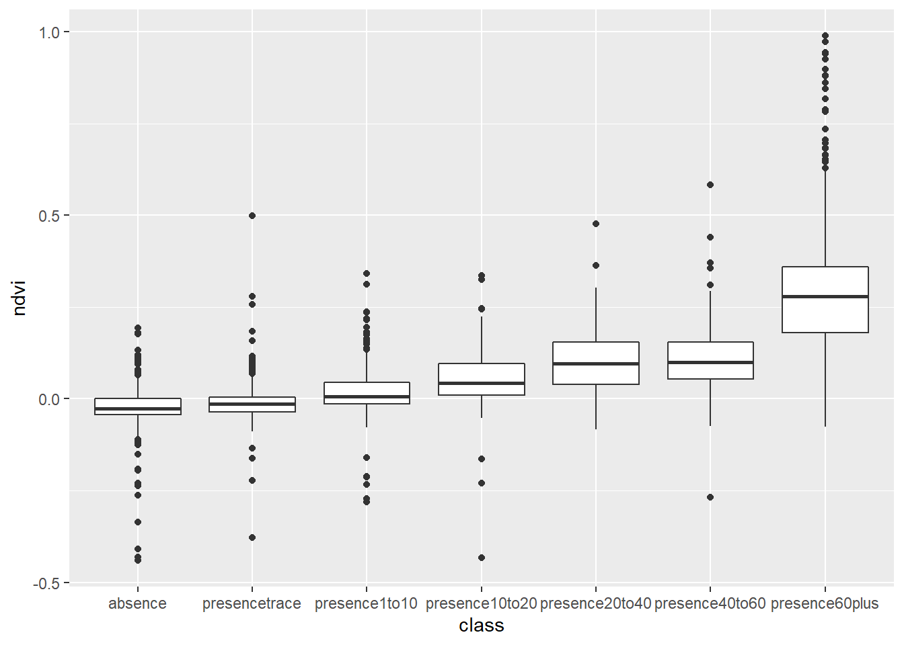
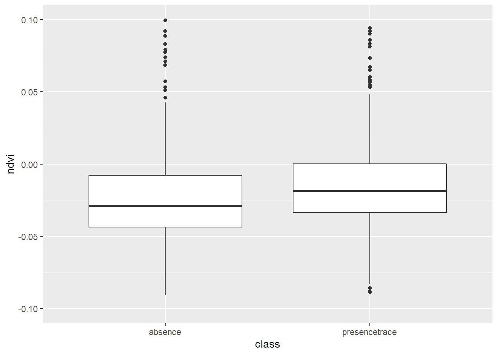
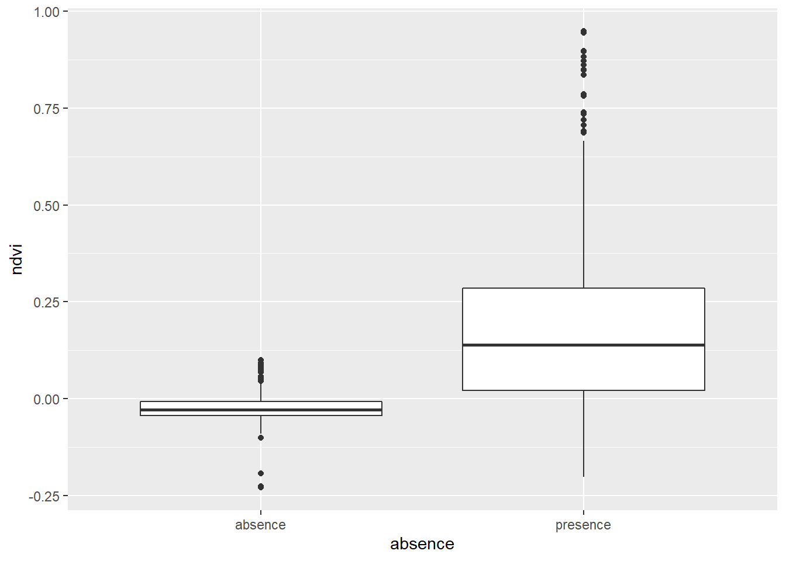
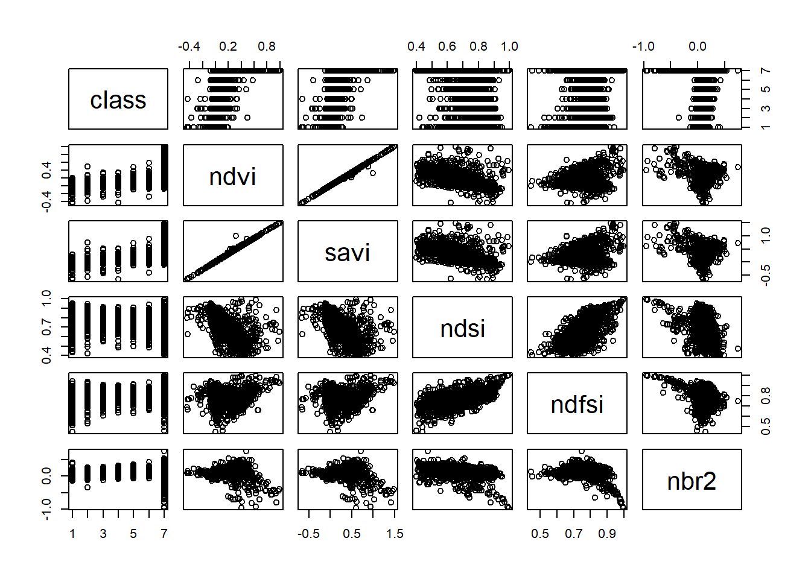
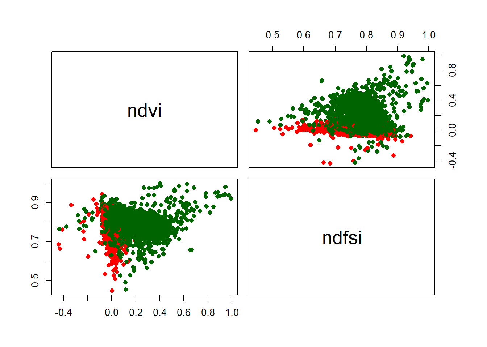

Chapter 8 Model
8.1 Setup
8.1.1 Libraries
library(mapview)
library(sf)
library(terra)
library(tidyverse)
library(ggplot2)
library(car)
library(forcats)
library(raster)
library(randomForest)8.1.2 Import Snow-On Landsant
# bring in snow-on landsat imagery tiles, merge into collection
rast_list <- list.files(path = "data/landsat/landsat_2019_2022", pattern='.tif', all.files=TRUE, full.names=TRUE)
rast_all <- lapply(rast_list, rast)
rast_collection <- sprc(rast_all)
crs <-crs(rast_collection[1])8.1.3 Import Points
# bring in training points
points <- st_read("data/points/points_export.shp") %>%
st_transform(crs=crs)## Reading layer `points_export' from data source
## `G:\Other computers\My Laptop\Documents\Grad School\Research\ConiferRegeneration\data\points\points_export.shp'
## using driver `ESRI Shapefile'
## Simple feature collection with 3300 features and 11 fields
## Geometry type: POINT
## Dimension: XY
## Bounding box: xmin: -118.6075 ymin: 42.57725 xmax: -106.9652 ymax: 48.83974
## Geodetic CRS: WGS 848.1.4 Import Fire Polygons
fires_export <- st_read("data/fire_boundaries/fires_export.shp")%>%
st_transform( crs=crs)## Reading layer `fires_export' from data source
## `G:\Other computers\My Laptop\Documents\Grad School\Research\ConiferRegeneration\data\fire_boundaries\fires_export.shp'
## using driver `ESRI Shapefile'
## Simple feature collection with 54 features and 20 fields
## Geometry type: MULTIPOLYGON
## Dimension: XY
## Bounding box: xmin: -118.6259 ymin: 42.57259 xmax: -106.9485 ymax: 48.9346
## Geodetic CRS: WGS 848.2 Prepare Training Data
8.2.1 Extract Landsat Values
# extract landsat values to each training point
extracted_df <- list()
for(i in 1:length(rast_all)){
print(i)
extracted_points <- st_as_sf(terra::extract(rast_collection[i], points,bind = TRUE))
extracted_df[[i]] <- extracted_points
}## [1] 1
## [1] 2
## [1] 3
## [1] 4
## [1] 5
## [1] 6
## [1] 7
## [1] 8
## [1] 9
## [1] 10
## [1] 11
## [1] 12
## [1] 13
## [1] 14
## [1] 15
## [1] 16
## [1] 17
## [1] 18
## [1] 19
## [1] 20
## [1] 21
## [1] 22
## [1] 23
## [1] 24
## [1] 25
## [1] 26
## [1] 27
## [1] 28
## [1] 29
## [1] 30
## [1] 31
## [1] 32training_dataset <- do.call(rbind,extracted_df) %>%
mutate(absence = as.factor(case_when(class == "absence" ~ "absence",
TRUE ~ "presence")),
class = fct_relevel(as.factor(class),c("absence","presencetrace","presence1to10"))) %>%
rename(f_type = ptch_fr,
area_ha = ptch_r_) %>%
st_drop_geometry() %>%
dplyr::select(-pixel_qa,-qd_vnt_,-qd_fr_d) %>%
drop_na(ndvi)8.2.2 Training Data by Forest Type
pres_abs_type <- training_dataset %>%
group_by(f_type,absence) %>%
summarize(n=n()) %>%
mutate(percent= 100*n/sum(n)) %>%
filter(absence=="presence")## `summarise()` has grouped output by 'f_type'. You can override using the
## `.groups` argument.pres_abs_type## # A tibble: 7 × 4
## # Groups: f_type [7]
## f_type absence n percent
## <chr> <fct> <int> <dbl>
## 1 Douglas-Fir presence 484 75.4
## 2 Fir-Spruce presence 516 68.3
## 3 Lodegepole Pine presence 1064 85.7
## 4 Other presence 25 75.8
## 5 Ponderosa presence 19 100
## 6 Unforested presence 399 70
## 7 <NA> presence 1 508.2.3 Training Data by Sampling Quadrant
pres_abs_quad <- training_dataset %>%
group_by(quad,absence) %>%
summarize(n=n()) %>%
mutate(percent= 100*n/sum(n)) %>%
filter(absence=="presence")## `summarise()` has grouped output by 'quad'. You can override using the
## `.groups` argument.pres_abs_quad## # A tibble: 5 × 4
## # Groups: quad [5]
## quad absence n percent
## <chr> <fct> <int> <dbl>
## 1 neg_ext presence 592 72.5
## 2 neg_int presence 628 77.1
## 3 pos_ext presence 656 79.5
## 4 pos_int presence 631 78.5
## 5 <NA> presence 1 508.3 Examine Data
8.3.1 Plot NDVI by Density Class
ggplot(training_dataset,aes(class,ndvi)) +
geom_boxplot()
ggplot(training_dataset %>% filter(class %in% c("absence","presencetrace")),aes(class,ndvi)) +
geom_boxplot()+
ylim(-.1,.1)## Warning: Removed 6 rows containing non-finite values (stat_boxplot).
ggplot(training_dataset,aes(absence,ndvi)) +
geom_boxplot()
8.3.2 Examine Variable Correlation
pairs(training_dataset %>% dplyr::select("class","ndvi","savi","ndsi","ndfsi","nbr2"))
pairs(training_dataset %>% dplyr::select("ndvi","ndfsi"),
pch = c(16),
col = c("red","dark green")[training_dataset$absence])
cor(training_dataset %>% drop_na() %>% dplyr::select(ndvi, evi, savi, ndsi,ndfsi, ndwi, nbr, nbr2)) ## ndvi evi savi ndsi ndfsi ndwi
## ndvi 1.000000000 0.30491671 0.996454457 -0.7427875 -0.002754375 -0.97989942
## evi 0.304916712 1.00000000 0.302528158 -0.2373597 0.045823412 -0.34051426
## savi 0.996454457 0.30252816 1.000000000 -0.7409383 0.002289476 -0.98127829
## ndsi -0.742787463 -0.23735975 -0.740938317 1.0000000 0.594820090 0.75443408
## ndfsi -0.002754375 0.04582341 0.002289476 0.5948201 1.000000000 0.00476788
## ndwi -0.979899418 -0.34051426 -0.981278294 0.7544341 0.004767880 1.00000000
## nbr 0.269451200 0.17265615 0.266491644 0.1629191 0.684603934 -0.28449883
## nbr2 0.219373399 0.13925969 0.206800607 -0.4593308 -0.314543919 -0.24868557
## nbr nbr2
## ndvi 0.2694512 0.2193734
## evi 0.1726561 0.1392597
## savi 0.2664916 0.2068006
## ndsi 0.1629191 -0.4593308
## ndfsi 0.6846039 -0.3145439
## ndwi -0.2844988 -0.2486856
## nbr 1.0000000 0.3247287
## nbr2 0.3247287 1.00000008.4 Model
8.4.1 Logistic
training_dataset <- training_dataset %>%
mutate(binom=case_when(absence=="absence"~0,
TRUE ~1),
binom=as.factor(binom)) %>%
drop_na()# full model
lm_conifer <- glm(binom ~ red + green + blue + nir + swir1 + swir2 + ndsi + ndfsi + savi + ndvi + evi +nbr + nbr2 + ndwi, data = training_dataset, family = binomial(logit))## Warning: glm.fit: fitted probabilities numerically 0 or 1 occurredvif(lm_conifer)## red green blue nir swir1 swir2
## 40.235624 39.136461 35.594514 19.229265 24.435774 22.559527
## ndsi ndfsi savi ndvi evi nbr
## 11.708580 10.725242 3767.066381 3782.203445 1.459624 7.957492
## nbr2 ndwi
## 1.679466 6.815018# remove savi
lm_conifer <- glm(absence ~ red + green + blue + nir + swir1 + swir2 + ndsi + ndfsi + ndvi + evi +nbr + nbr2 + ndwi, data = training_dataset, family = binomial(logit))## Warning: glm.fit: fitted probabilities numerically 0 or 1 occurredvif(lm_conifer)## red green blue nir swir1 swir2 ndsi ndfsi
## 40.214274 39.126259 35.587646 19.218533 24.433118 22.555966 11.693810 10.723308
## ndvi evi nbr nbr2 ndwi
## 5.851116 1.459246 7.955661 1.678455 6.810776# remove red
lm_conifer <- glm(absence ~ green + blue + nir + swir1 + swir2 + ndsi + ndfsi + ndvi + evi +nbr + nbr2 + ndwi, data = training_dataset, family = binomial(logit))## Warning: glm.fit: fitted probabilities numerically 0 or 1 occurredvif(lm_conifer)## green blue nir swir1 swir2 ndsi ndfsi ndvi
## 36.396132 23.319884 17.297794 24.197945 22.315908 11.604013 10.617050 5.538773
## evi nbr nbr2 ndwi
## 1.456638 7.927216 1.628194 6.698962# remove swir1
lm_conifer <- glm(absence ~ green + blue + nir + swir2 + ndsi + ndfsi + ndvi + evi +nbr + nbr2 + ndwi, data = training_dataset, family = binomial(logit))## Warning: glm.fit: fitted probabilities numerically 0 or 1 occurredvif(lm_conifer)## green blue nir swir2 ndsi ndfsi ndvi evi
## 36.049444 23.349710 16.817068 9.416591 11.644033 10.160828 5.552099 1.456431
## nbr nbr2 ndwi
## 7.929256 1.421744 6.706886# remove green
lm_conifer <- glm(absence ~ blue + nir + swir2 + ndsi + ndfsi + ndvi + evi +nbr + nbr2 + ndwi, data = training_dataset, family = binomial(logit))## Warning: glm.fit: fitted probabilities numerically 0 or 1 occurredvif(lm_conifer)## blue nir swir2 ndsi ndfsi ndvi evi nbr
## 6.452192 13.072599 9.336570 11.525160 10.099043 5.398357 1.456322 7.930256
## nbr2 ndwi
## 1.419714 6.440838# remove ndfsi
lm_conifer <- glm(absence ~ blue + nir + swir2 + ndsi + ndvi + evi +nbr + nbr2 + ndwi, data = training_dataset, family = binomial(logit))## Warning: glm.fit: fitted probabilities numerically 0 or 1 occurredvif(lm_conifer)## blue nir swir2 ndsi ndvi evi nbr nbr2
## 6.427382 13.040423 9.307760 7.631528 5.438639 1.452517 6.103190 1.372902
## ndwi
## 6.366622# remove nir
lm_conifer <- glm(absence ~ blue + swir2 + ndsi + ndvi + evi +nbr + nbr2 + ndwi, data = training_dataset, family = binomial(logit))## Warning: glm.fit: fitted probabilities numerically 0 or 1 occurredvif(lm_conifer)## blue swir2 ndsi ndvi evi nbr nbr2 ndwi
## 4.316539 4.881275 7.523335 5.555723 1.456012 5.337671 1.366129 6.150173# remove ndsi
lm_conifer <- glm(absence ~ blue + swir2 + ndvi + evi + nbr + nbr2 + ndwi, data = training_dataset, family = binomial(logit))## Warning: glm.fit: fitted probabilities numerically 0 or 1 occurredvif(lm_conifer)## blue swir2 ndvi evi nbr nbr2 ndwi
## 4.068954 4.471110 5.528265 1.454677 2.264452 1.113399 5.662548# final model
summary(lm_conifer)##
## Call:
## glm(formula = absence ~ blue + swir2 + ndvi + evi + nbr + nbr2 +
## ndwi, family = binomial(logit), data = training_dataset)
##
## Deviance Residuals:
## Min 1Q Median 3Q Max
## -3.4229 0.0000 0.0051 0.2532 2.6226
##
## Coefficients:
## Estimate Std. Error z value Pr(>|z|)
## (Intercept) -9.413e+00 1.623e+00 -5.800 6.63e-09 ***
## blue 9.148e-05 4.065e-05 2.250 0.02443 *
## swir2 -2.518e-03 3.990e-04 -6.312 2.76e-10 ***
## ndvi 2.144e+01 4.604e+00 4.657 3.21e-06 ***
## evi 1.742e-01 2.301e-01 0.757 0.44899
## nbr 1.392e+01 2.009e+00 6.926 4.34e-12 ***
## nbr2 4.097e+00 1.249e+00 3.280 0.00104 **
## ndwi -1.895e+01 4.161e+00 -4.554 5.26e-06 ***
## ---
## Signif. codes: 0 '***' 0.001 '**' 0.01 '*' 0.05 '.' 0.1 ' ' 1
##
## (Dispersion parameter for binomial family taken to be 1)
##
## Null deviance: 3525.7 on 3258 degrees of freedom
## Residual deviance: 1674.7 on 3251 degrees of freedom
## AIC: 1690.7
##
## Number of Fisher Scoring iterations: 9anova(lm_conifer)## Warning: glm.fit: fitted probabilities numerically 0 or 1 occurred
## Warning: glm.fit: fitted probabilities numerically 0 or 1 occurred
## Warning: glm.fit: fitted probabilities numerically 0 or 1 occurred
## Warning: glm.fit: fitted probabilities numerically 0 or 1 occurred## Analysis of Deviance Table
##
## Model: binomial, link: logit
##
## Response: absence
##
## Terms added sequentially (first to last)
##
##
## Df Deviance Resid. Df Resid. Dev
## NULL 3258 3525.7
## blue 1 691.00 3257 2834.7
## swir2 1 91.16 3256 2743.5
## ndvi 1 958.47 3255 1785.0
## evi 1 6.42 3254 1778.6
## nbr 1 69.64 3253 1709.0
## nbr2 1 13.97 3252 1695.0
## ndwi 1 20.35 3251 1674.7image_subset <- mask(rast_collection[1],fires_export)
rast_predicted <- terra::predict(image_subset,lm_conifer, type="response", se.fit=TRUE)
rast_predicted[rast_predicted < .5] <- 0
rast_predicted[rast_predicted >= .5] <- 1
mapview(raster(rast_predicted))## Warning in rasterCheckSize(x, maxpixels = maxpixels): maximum number of pixels for Raster* viewing is 5e+05 ;
## the supplied Raster* has 37748736
## ... decreasing Raster* resolution to 5e+05 pixels
## to view full resolution set 'maxpixels = 37748736 '## Warning in showSRID(uprojargs, format = "PROJ", multiline = "NO", prefer_proj =
## prefer_proj): Discarded ellps WGS 84 in Proj4 definition: +proj=merc +a=6378137
## +b=6378137 +lat_ts=0 +lon_0=0 +x_0=0 +y_0=0 +k=1 +units=m +nadgrids=@null
## +wktext +no_defs +type=crs## Warning in showSRID(uprojargs, format = "PROJ", multiline = "NO", prefer_proj =
## prefer_proj): Discarded datum World Geodetic System 1984 in Proj4 definition8.5 Random Forest
rf_conifer <- randomForest(absence ~ red + green + blue + nir + swir1 + swir2 + ndvi + savi + evi + ndsi+ndfsi+ nbr + nbr2 + ndwi, data= training_dataset)
randomForest::importance(rf_conifer)## MeanDecreaseGini
## red 56.38166
## green 51.81706
## blue 66.55586
## nir 43.89841
## swir1 49.36339
## swir2 65.79664
## ndvi 192.11982
## savi 186.97642
## evi 45.88627
## ndsi 53.97613
## ndfsi 60.39459
## nbr 78.30394
## nbr2 78.13761
## ndwi 125.92199summary(rf_conifer)## Length Class Mode
## call 3 -none- call
## type 1 -none- character
## predicted 3259 factor numeric
## err.rate 1500 -none- numeric
## confusion 6 -none- numeric
## votes 6518 matrix numeric
## oob.times 3259 -none- numeric
## classes 2 -none- character
## importance 14 -none- numeric
## importanceSD 0 -none- NULL
## localImportance 0 -none- NULL
## proximity 0 -none- NULL
## ntree 1 -none- numeric
## mtry 1 -none- numeric
## forest 14 -none- list
## y 3259 factor numeric
## test 0 -none- NULL
## inbag 0 -none- NULL
## terms 3 terms callrast_predicted <- terra::predict(image_subset,rf_conifer, type="response", se.fit=TRUE)
mapview(raster(rast_predicted))## Warning in rasterCheckSize(x, maxpixels = maxpixels): maximum number of pixels for Raster* viewing is 5e+05 ;
## the supplied Raster* has 37748736
## ... decreasing Raster* resolution to 5e+05 pixels
## to view full resolution set 'maxpixels = 37748736 '